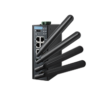

Wi-Fi
Model No.
Model Name
Function
Features
Benefit

Industrial Wi-Fi AP
Networking
- Selective 2.4Ghz/ 5Ghz
- Slim size
- MIMO 2T2R
- PoE (optional)
- Serve as an AP
- Slim size to fit in any corner
- Supports dual bands to divide data into groups
- PoE allows power and data run on 1 wire, best for locations where basic infrastructure is poor

EKI-6333AC-4GP-A
Industrial W-Fi AP with PoE
Networking
- 4 Ethernet port
- Supports 30W PoE (PSE)
- 2.4Ghz/ 5Ghz concurrent
- Serve as an AP
- Non-intrusive, no downtime, no wiring or cable runs
- Supports dual bands to divide data into groups
- Supports Ethernet port to connect IP-based devices to wireless network at ease
- PoE allows power and data run on 1 wire, best for locations where basic infrastructure is poor.

WISE-4220-A
WiFi 2.4G Wireless Module
Data Collection
- Supports IEEE 802.11 b/g/n 2.4GHz Wi-Fi with AP Mode
- Supports HTML5 Web configuration interface.
- Can log up to 10,000 samples of data with a time stamp
- Data can be automatically pushed to private cloud server or Dropbox
- Supports RESTful web API in JSON format for IoT integration
- Easily extend the existing network by adding APs, and share existing Ethernet software
- Configured by mobile devices directly without installing any software or Apps
- Zero data loss using the log function with RTC time stamp

Industrial Wi-Fi Client
Networking
- Selective 2.4Ghz/ 5Ghz
- Slim size
- MIMO 2T2R
- Fast roaming
- Supports Modbus protocol (optional)
- PoE (optional)
- Serve as a client
- Fast roaming for seamless data communication, best for moving assets that wired communication cannt satisfy
- Supports dual bands to divide data into groups
- Supports Modbus to easily connect serial devices to wireless networks.
- PoE allows power and data run on 1 wire, best for locations where basic infrastructure is poor

Industrial Waterproof Wi-Fi AP
Networking
- 2.4Ghz/ 5Ghz concurrent
- IP55
- MIMO 2T2R
- 2 Ethernet port
- Serve as an AP
- Fast roaming for seamless data communication, best for moving assets that wired communication cannt easily satisfy
- Supports dual bands to divide data into groups
- Supports Ethernet port to easily connect IP-based devices to wireless networks

Industrial Cellular Router with Wi-Fi
Networking
- Support Wi-Fi and LTE interface
- Supports up to 4 WWAN connectivity
- Supports Dual SIM Card Slots
- Up to Five WWAN Modules
- Auto connectivity switching base on application environment wireless sinal status
- Supports different service provider SIM cards to make sure LTE connectivity is stable.
- Multiple WWAN modules to categorize data groups and balance transmission loading

Industrial Wi-Fi AP with M12 Connector
Networking
- Supports multi-mode AP/Client
- Wireless connection Redundancy supported
- Supports Wi-Fi 2.4G/5G concurrent
- Serve as both AP and client
- Supports dual bands to divide data into groups
- Supports Ethernet port to connect IP-based devices to wireless network at ease
- Rugged M12 anti vibration connector, guaranteeing reliable connectivity